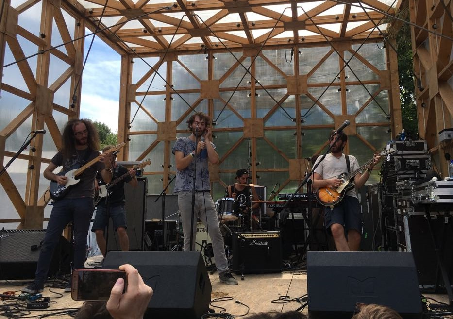

I Pinguini Tattici Nucleari sono un gruppo musicale italiano formatosi nel 2010 in provincia di Bergamo.
Storia del gruppo
Gli esordi e i primi album
Il gruppo nasce alla fine del 2010 in provincia di Bergamo. Il nome, secondo quanto raccontato dai
componenti della band, deriverebbe dalla birra scozzese Tactical Nuclear Penguin, prodotta dal 2009 dal
birrificio britannico BrewDog.
Il loro primo EP autoprodotto contenente cinque brani dal titolo Cartoni animali viene pubblicato nel 2012.
Il 18 dicembre 2012 si esibiscono sul palco del Polaresco di Bergamo per la festa della lista universitaria
Uni+. Il primo album risale invece al 2014: Il re è nudo, composto da sette tracce più una intro, contiene
uno dei brani più conosciuti del gruppo dai suoi esordi, Cancelleria.
Il 18 dicembre 2015 viene pubblicato il secondo album Diamo un calcio all'Aldilà.
Il terzo album del gruppo, contenente undici tracce e una intro, esce il 17 aprile 2017 con il titolo
Gioventù brucata. Nell'agosto dello stesso anno partecipano alla venticinquesima edizione del Sziget
Festival a Budapest, esibendosi sul Light Stage.
Locandina di uno dei loro live
Fuori dall'hype con Sony Music
Il 5 aprile 2019 viene pubblicato, per la prima volta da Sony Music, l'album Fuori dall'hype, anticipato dal
singolo Verdura uscito il 18 gennaio dello stesso anno. Il 26 aprile 2019 esce Faber nostrum, album tributo
per Fabrizio De André, contenente una rivisitazione del gruppo di Fiume Sand Creek.
Il 1º maggio 2019 partecipano al Concerto del Primo Maggio in piazza San Giovanni in Laterano a Roma
portando i brani Verdura e Irene.
A settembre dello stesso anno la FIMI premia con il disco d'oro il singolo Irene. Due settimane dopo anche
il singolo Verdura riceve il medesimo riconoscimento.
Il Festival di Sanremo 2020 e il #machilavrebbemaidetto tour
I Puinguini Tattici Nucleari a Sanremo
Il gruppo ha partecipato al Festival di Sanremo 2020 con il brano dal titolo Ringo Starr. Il gruppo si è
esibito durante la seconda serata di gara ottenendo il terzo posto nella classifica parziale della serata e
il quarto nella classifica generale delle prime due serate, decretati dal voto della giuria demoscopica.
Nella serata finale, che ha visto una classifica basata sui voti di giuria demoscopica, Sala Stampa e
televoto, il gruppo si è posizionato sul podio e, dopo un'ulteriore votazione tra i tre migliori artisti, si
è attestato al terzo posto della 70ª edizione del Festival di Sanremo.
Durante la terza serata del festival, dedicata alle cover delle canzoni della storia di Sanremo, hanno
cantato un medley dal titolo Settanta volte con Papaveri e papere, Nessuno mi può giudicare, Gianna, Sarà
perché ti amo, Una musica può fare, Salirò, Sono solo parole e Rolls Royce, che li ha portati al terzo posto
della classifica della serata stilata sulla base dei voti dei membri dell'orchestra del festival.
Il 7 febbraio è uscita la ristampa di Fuori dall'hype dal titolo Fuori dall'hype - Ringo Starr, contenente
anche il brano di Sanremo Ringo Starr, i brani inediti dal titolo Ridere e Bergamo, la versione live di
Cancelleria (da Il re è nudo) e la versione acustica di Irene (dall'album Gioventù brucata). Il 17 febbraio
2020 l'album Fuori dall'hype viene certificato disco d'oro; il 24 febbraio 2020 anche il singolo Ringo Starr
viene certificato disco d'oro.
Per il 29 febbraio 2020 è annunciato un concerto per la prima volta al Mediolanum Forum di Assago. Visto il
successo di vendite per questo concerto, che è andato tutto esaurito in poche settimane, sono stati
organizzati altri concerti nei palazzetti di diverse città italiane (tra cui una nuova data a Milano): si
tratta del primo tour della band nei palazzetti, il cui nome #machilavrebbemaidetto tour è una citazione del
singolo Verdura. Il 24 febbraio è giunta la notizia del rinvio di tutte le date del tour a causa della
diffusione del Coronavirus in Italia a scopo cautelativo; con una successiva comunicazione del 6 marzo, sono
state ufficializzate le nuove date del tour che si terrà nel mese di ottobre 2020.
Formazione
- Riccardo Zanotti (16 settembre 1994, Alzano Lombardo) – voce
- Nicola Buttafuoco – chitarra
- Lorenzo Pasini – chitarra
- Simone Pagani – basso
- Matteo Locati – batteria
- Elio Biffi – tastiere, fisarmonica, voce